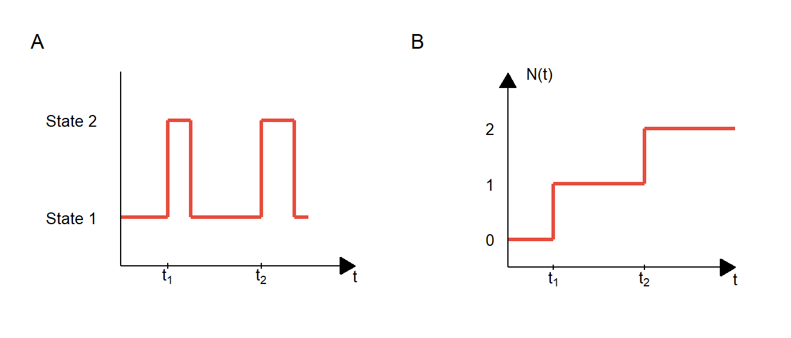
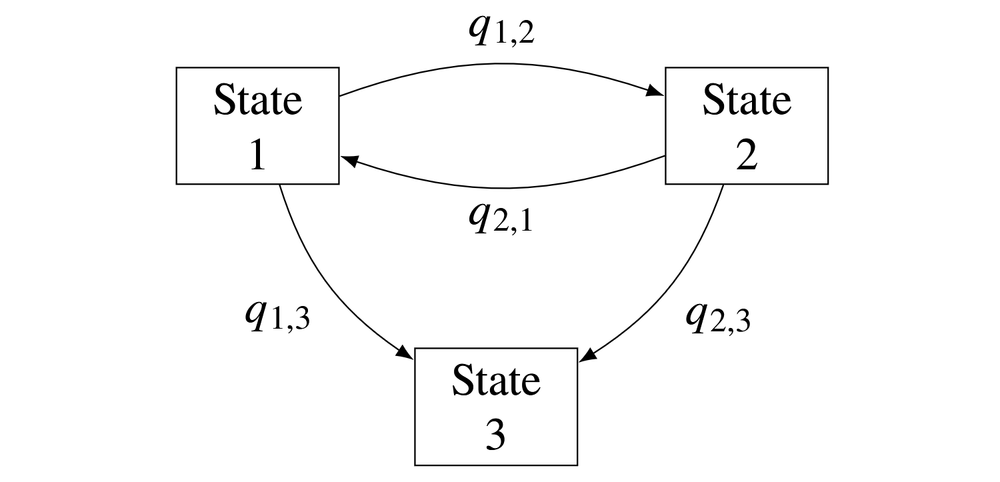

![]()

This is part five of a series on statistical methods for analysing time-to-event, or “survival” data.
Multi-state survival models
When disease processes are more complex, or when intermediate events may influence the final outcome, the standard survival methods described so far may be insufficient to explore the effects of treatment on these outcomes. In these cases, multi-state models, which are more flexible and hence better able to investigate the different pathways that patients may experience, can be applied. These models allow for joint estimation of features of the underlying process and the associated hazards of transition for a set of given covariates, and implicitly account for competing risks.
This section provides an introduction to the theory of multi-state processes and describes how these relate to continuous-time and discrete-time multi-state models.
Stochastic processes underlying multi-state models
Multi-state models combine statistical inference with the theory of stochastic processes.
Discrete and continuous parameter processes
A stochastic process is formally defined as a collection of random variables \(\{X(t),\; t \in T\}\), indexed by a parameter \(t\) which varies in a mathematical index set \(T\). The variable \(X(t)\) is the state of the process at time \(t\), and the set \(\mathcal{S}\) of all possible values of \(X(t)\) is termed the state space.
Two important cases of stochastic processes are discrete parameter processes, when \(T = \{\pm1, \pm2, \pm3, \dots\}\), and continuous parameter processes, when \(T = \{t:-\infty < t < \infty\}\). Both may be restricted to the positive domain, in which case the parameter \(t\) may be used to represent time, and these processes are termed ‘discrete-time’ and ‘continuous-time’ processes.
Counting processes
In survival analyses, the focus is typically on observing events as they occur over time, forming a class of stochastic process known as a point process. If the number of events that occur over time are counted, then the stochastic process is instead known as a counting process. Counting processes form the basis for multi-state models, and linkage to the theory of martingales (not discussed here) provides a theoretical framework for these models.
Markov process
A stochastic process is called a ‘Markov process’ if the future state of a process depends only on the present state, and not on the sequence of events that preceded it. Equivalently, for a Markov process the conditional probability of a future state \(X(t_{i+j})\) given \(X(t_i)\) is independent of previous states \(X(t_0), X(t_1), \dots, X(t_{i-1})\).
Time-homogeneous Markov processes
Markov processes are said to be ‘time-homogeneous’ if the probability of transition from one state to the next (termed the transition probability) is independent of the time parameter \(t\). Equivalently, for \(\Pr(X(t + u) = s \mid X(t) = r)\) denoting the conditional probability of a process \(X(\cdot)\) being in state \(s\) at time \(t + u\), given the process was in state \(r\) at time \(t\), a Markov process is time-homogeneous if:
\[ \Pr(X(t+u) = s \mid X(t) = r) = \Pr(X(u) = s \mid X(0) = r) \]
A well-known time-homogeneous Markov counting process is the Poisson process, where events occur randomly and independently of each other. A homogeneous Poisson process is described by its constant intensity parameter \(\lambda > 0\), which represents the average rate of events that occur per unit time. For any infinitesimal time interval \([t, t+\delta]\), as \(\delta \rightarrow 0\), the probability of exactly one event occurring in this interval is asymptotically \(\lambda\delta\).
Multi-state processes
Multi-state processes are discrete-state stochastic processes with a finite state space \(\mathcal{S} = \{1, 2, \ldots, m\}\). In these processes, an individual begins in one state and spends a random, continuously-distributed time in that state before moving to a random next state. Multi-state processes are defined by the initial distribution of the states \(\Pr(X(0) = r)\), and the transition probabilities \(\Pr(X(t + u) = s \mid X(t) = r, \mathcal{X}_t)\) from state \(r\) to state \(s\) during the interval \((t, t + u]\), with \(r,s \in \mathcal{S}\), and where \(\mathcal{X}_t\) represents the history of the process \(X(\cdot)\) up to time \(t\).
Figure 1 shows how a counting process may be built on top of a multi-state process: panel A shows a multi-state process with transitions between two states, and the corresponding counting process for the transition event from State 1 \(\rightarrow\) State 2 is shown in panel B.
Multi-state models
In a multi-state model, each state represents a different stage or condition that an individual may experience. The transitions between these states are modelled as a multi-state process, with the time spent in each state and the transitions between states being random variables that can be estimated from data.
Multi-state models are particularly useful in the context of disease progression, as each state in the model can be used to represent a different level of disease severity, with transitions between states representing progression. This may allow for a more nuanced understanding of disease processes, capturing the different pathways that patients may experience.
Continuous-time multi-state models

Continuous-time multi-state models are defined by transition intensities, \(q_{r,s}(t, \boldsymbol{z}(t))\), which represent the instantaneous hazard of moving from state \(r\) to state \(s\) at time \(t\), dependent on a set of explanatory, potentially time-varying, covariates \(\boldsymbol{z}(t)\). Defining an individual’s state at time \(t\) as \(X(t)\) then:
\[ q_{r,s}(t, \boldsymbol{z}(t)) = \lim_{\delta t\downarrow 0}\frac{\Pr(X(t+\delta t)=s \mid X(t)=r)}{\delta t} \]
From the definition of the hazard function, this transition intensity is equivalent to the hazard of transition from one state to another. These transition intensities form a transition intensity matrix \(\mathbf{Q}\), whose rows sum to zero, with diagonal entries defined by:
\[q_{r,r}(t, \boldsymbol{z}(t)) = - \sum_{s \neq r} q_{r,s}(t, \boldsymbol{z}(t))\]
For the example three-state model shown in Figure 2 this matrix would be:
\[ \mathbf{Q} = \begin{bmatrix} -q_{1,2}-q_{1,3} & q_{1,2} & q_{1,3} \\ q_{2,1} & -q_{2,1}-q_{2,3} & q_{2,3} \\ 0 & 0 & 0 \\ \end{bmatrix} \]
Here, state 3 is known as an ‘absorbing’ state, as individuals do not leave the state after arrival, while states 1 and 2 are `transient’ states. The transition probability matrix, which contains the probabilities of moving between states within a time-interval of length \(t\) is derived from the transition intensity matrix by the matrix exponential:
\[\mathbf{P}(t) = \exp(t\mathbf{Q}) = \sum_{n=0}^{\infty}\frac{t^n}{n!}\mathbf{Q}^n\]
Covariates
The (potentially time-varying) effect of a given set of \(M\) covariates, \(\boldsymbol{z}(t) = \{z_1(t), \ldots, z_M(t)\}\), on the transition intensities \(q_{r,s}(t, \boldsymbol{z}(t))\) can be expressed via a proportional hazards regression model. Typically these combine a parametric baseline hazard, \(q^{(0)}_{r,s}(t)\), with log-linear regression:
\[\begin{align*} q_{r,s}(t, \boldsymbol{z}(t)) & = q^{(0)}_{r,s}(t)\exp\left(\sum_{m=1}^{M}\beta_{r,s,m}z_{m}(t)\right) \\ & = q^{(0)}_{r,s}(t)\exp\left(\boldsymbol{\beta}_{r,s}^\mathsf{T}\boldsymbol{z}(t)\right) \end{align*}\]
where \(\exp(\beta_{r,s,m})\) is the hazard ratio for the \(m\)th covariate on the \(r \rightarrow s\) transition.
Sojourn time
The time spent in a state prior to transition is termed the sojourn time, with its mean given by the inverse of the transition intensity for remaining in the state:
\[E(T_r) = -\frac{1}{q_{r,r}}\]
Discrete-time multi-state models
For population studies which measure duration in discrete time, discrete-time multi-state models may be applied. Since the concept of instantaneous risk does not apply in discrete time, transition probabilities are instead defined which represent the probability of transition from state \(r\) to state \(s\) in the time interval \((t_i,t_j]\), \(t_j>t_i\):
\[p_{r,s}(t_i, t_j) = \Pr(X(t_j) = s \mid X(t_i) = r)\]
Coming next
In the next post, I’ll discuss statistical inference methods for multi-state models, including non-parametric estimation with the Aalen-Johansen estimator and parametric approaches using maximum likelihood.
References
- Aalen O, Borgan O, Gjessing H. Survival and Event History Analysis: A Process Point of View. Springer; 2008. 540 p.
- Andersen PK, Borgan O, Gill RD, Keiding N. Statistical models based on counting processes. Springer; 1996. 784 p.
- Andersen PK, Keiding N. Multi-state models for event history analysis. Stat Methods Med Res. 2002;11(2):91-115.
- Chiang CL. An introduction to stochastic processes and their applications. RE Krieger; 1980.
- Putter H, Fiocco M, Geskus RB. Tutorial in biostatistics: competing risks and multi-state models. Stat Med. 2007;26(11):2389-430.
- van den Hout A. Multi-State Survival Models for Interval-Censored Data. CRC Press; 2016. 238 p.
Reuse
Citation
BibTeX citation:
@online{pd2025,
author = {PD , Kirwan},
title = {Part {V:} {Multi-state} Models},
date = {2025-04-17},
url = {https://www.pkirwan.com/blog/multi-state-models.html},
langid = {en}
}
For attribution, please cite this work as:
PD, Kirwan. 2025. “Part V: Multi-State Models.” April 17,
2025. https://www.pkirwan.com/blog/multi-state-models.html.